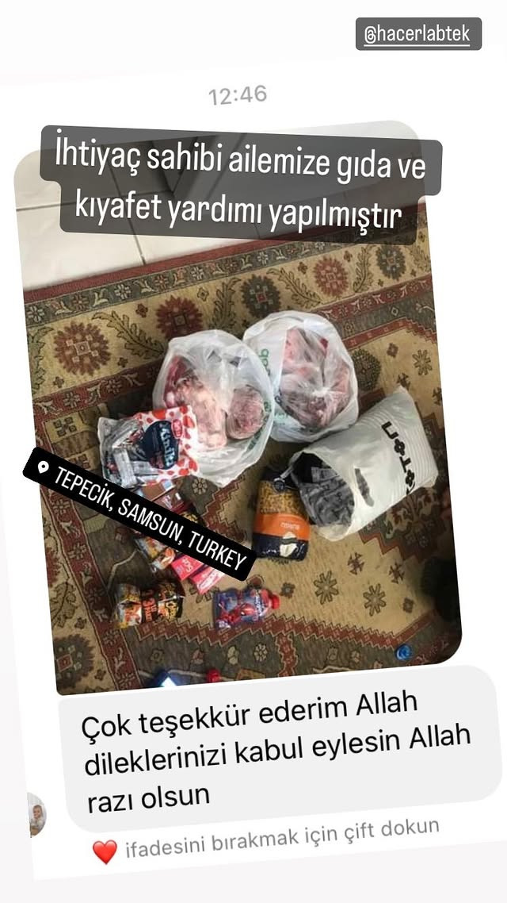
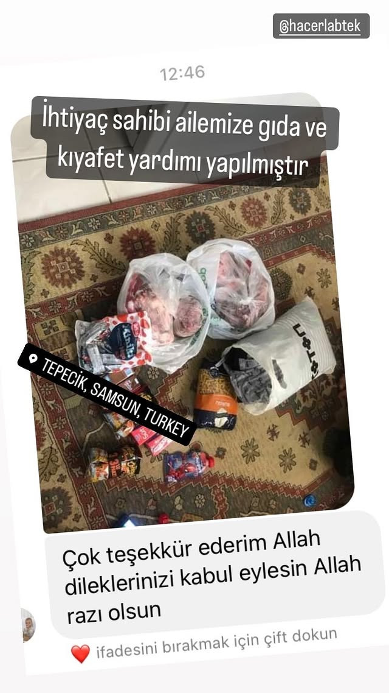

Hiçbir kuruma bağlı olmayan, tamamen gönüllü esaslı yardım ağımıza hoş geldiniz. İhtiyaç sahipleri ve yardımseverler bu platformda buluşuyor.
Hemen Yardım Et Yardım İsteSamsun Yardımlaşma Platformu'nun desteklediği kalıcı eseri haritada görüntüleyebilirsiniz.
FX44+J3R, Cox's Bazar, Bangladeş
Proje Detaylarına GitBizler, Samsun'da yaşayan ve çevresindeki ihtiyaç sahiplerine ulaşmayı hedefleyen bir grup gönüllüyüz. Resmi bir kurum veya dernek değiliz; amacımız sadece güvenilir ve hızlı bir şekilde destek sağlamaktır. Şeffaflık ilkemiz gereği, toplanan ve ulaştırılan tüm yardımların takibini yapıyoruz. Samsun'a gönül vermiş herkesi bu iyilik hareketine bekliyoruz.
Proje Açıklaması: Susuzlukla mücadele eden kardeşlerimize kalıcı bir çözüm sunmak amacıyla Bangladeş'te su kuyusu açtık. Bu kuyu, onlarca ailenin temiz suya ulaşımını sağlamaktadır. Katkıda bulunan tüm yardımseverlerimize minnettarız.
Proje Açıklaması: Acil insani yardıma ihtiyaç duyan, özellikle savaş ve çatışma bölgelerindeki (Gazze, Suriye vb.) kardeşlerimize eğitim, gıda ve temel yaşam malzemeleri ulaştırmak için çalışıyoruz. Kardeşlik bağlarımızla yanınızdayız.
.jpg)
Proje Açıklaması: İhtiyaç sahibi ailelerin mutfak masraflarını hafifletmek amacıyla temel gıda ürünlerinden oluşan koliler veya market hediye kartları ulaştırıyoruz. Aç kalan kimse kalmasın diye çalışıyoruz.
 


Proje Açıklaması: Özellikle kış aylarında olmak üzere, ihtiyaç sahibi çocuk, genç ve yaşlılar için temiz ve kullanılabilir giysi, ayakkabı ve mont yardımları yapıyoruz. Evinize sığmayan fazlalıklar, bir başkasının hayatını ısıtabilir.
Proje Açıklaması: İhtiyaç sahibi ailelerin temel gıda masraflarını karşılayabilmeleri için anlaşmalı marketlerden (A101, Şok, BİM vb.) hediye kartları temin edilmektedir. Ayrıca **#askıdafatura** kampanyası ile fatura desteği de sağlanmaktadır.
BİM Kartları.
Fatura Desteği.
Genel Kart Çağrısı.

Proje Açıklaması: Yaşlı, engelli veya kronik hastalığı bulunan ihtiyaç sahiplerine tekerlekli sandalye, yürüteç, hasta bezi, medikal malzeme ve ilaç desteği sağlamaktayız. Sağlık, en büyük ihtiyaçtır!

Proje Açıklaması: Geleceğimizin teminatı olan çocuklarımızın eğitim hayatlarına katkı sağlamak amacıyla defter, kalem, çanta ve diğer tüm kırtasiye ihtiyaçlarını karşılıyoruz. Okul masrafları konusunda desteklerinizi bekliyoruz.
Proje Açıklaması: Yetim ve yardıma muhtaç çocukları sevindirmek amacıyla, temel yardımların yanı sıra gofret, atıştırmalık ve oyuncak (araba vb.) dağıtımı yaparak yüzlerindeki tebessümü artırmayı hedefliyoruz.
Proje Açıklaması: Yurt dışındaki medreselerde eğitim gören öğrencilerin manevi ihtiyaçlarını karşılamak üzere, bağışlarınızla temin edilen Kur'an-ı Kerimler dağıtılmıştır. Eğitimlerine destek olmaktan mutluluk duyduk.

Açıklama: Platformumuza maddi ve manevi destek sağlayan tüm yardımseverlerimiz adına özel olarak teşekkür sertifikaları hazırlıyoruz. Bu sertifikalar, bağışlarınızın şeffaf ve doğru amaçlara ulaştığının bir göstergesidir.


Samsun Yardımlaşma Platformu, tamamen gönüllülerin gücüyle ilerlemektedir. Saha çalışmalarına katılmak, sosyal medya desteği vermek veya bir alanda uzmanlığınızla katkı sağlamak istiyorsanız formu doldurun.
Yardım türünüze göre aşağıdaki seçeneklerden birini kullanabilirsiniz. Maddi desteklerinizle iyilik köprüsünü kuruyoruz.
🔴 BANKA HESAP BİLGİLERİMİZ GÜNCELLENMİŞTİR!
Yardımlarınızı aşağıdaki hesaba, açıklama kısmına amacınızı belirterek (örn: GIDA, SU KUYUSU, ZEKAT) gönderebilirsiniz:
Banka: Ziraat Katılım Bankası
Alıcı Adı: İYİLİK PLATFORMU DERNEĞİ (Örn.)
IBAN (TL): TR00 0001 0001 0000 0000 0000 00
**Lütfen havale/EFT yapmadan önce güncel ve resmi bilgileri teyit ediniz.**
₿ **KRİPTO PARA İLE BAĞIŞ (Bitcoin)**
Aşağıdaki adresi kullanarak Bitcoin (BTC) bağışlarınızı yapabilirsiniz:
31qoBtBfXtkJrzzjYyYCNuvd6fftXhTtTe
Giysi, gıda, eşya bağışı veya zamanınızla sahada/çevrimiçi gönüllü olmak için bize yazın.
Gönüllü Başvuru Formu**Lütfen buradaki bilgileri Instagram sayfanızdaki en güncel durum ile manuel olarak güncelleyin.**
Detay: Yeni eğitim-öğretim dönemine hazırlık amacıyla, ilkokul ve ortaokul öğrencileri için çanta, defter, boya ve diğer temel kırtasiye malzemelerine ihtiyaç bulunmaktadır.
Kışlık yakacak yardımı çağrısı, yardımseverlerimizin hızlı desteğiyle tamamlanmıştır. Destek olan herkese teşekkür ederiz. (Güncelleme Tarihi: 10.12.2025)
Instagram (En Hızlı İletişim): @samsun_yardimlasma
Facebook: Samsun Yardımlaşma
Telegram: @samsunyardimlasma
E-Posta: **EPOSTA\_ADRESINIZ@domain.com** (Lütfen burayı kendi e-posta adresinizle değiştirin)
Telefon (Yalnızca Acil Durumlar İçin): **TELEFON NUMARANIZI BURAYA YAZIN**
**Not:** Tüm taleplerinizi ve desteklerinizi, hızlı ve güvenilir geri dönüş için öncelikle sosyal medya veya E-Posta yoluyla iletmenizi rica ederiz.